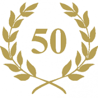

<article class="mb-4">
    <div class="container px-4 px-lg-5">
        <div class="row gx-4 gx-lg-5 justify-content-center">
            <div class="col-md-10 col-lg-8 col-xl-7">

                <p>
                    Elke zondag gedurende het hele jaar rijden we een rit. Natuurlijk kan het bij uitzonderlijk slecht weer
                    zo zijn dat we kiezen om niet te vertrekken. Doorheen ons club seizoen - van begin maart tot eind oktober -
                    rijden we in 3 afzonderlijke groepen, elk op hun aangepast niveau. Kijk voor rit details zoals: afstand, start uur en
                    gpx bestand op onze kalender.
                </p>
                <p>
                    Tijdens de overige wintermaanden rijden we op zondag morgen met een aangepast "winter tempo" een rondje als één groep.
                    Voor deze winter-ritten geld 9uur als vast start uur.
                </p>

                <h2 class="section-heading">Start Locatie</h2>
                <p>
                    We vertrekken steeds vanaf hetzelfde punt in Tessenderlo aan het Loo - ingang bibliotheek - langs de Geelsebaan.
                    Het uur van vertrek per groep is te vinden op onze kalender.
                </p>

                <h2 class="section-heading">Club lokaal</h2>
                <p>
                    
                    Op het einde van elke rit stoppen we aan ons
                    club lokaal en trouwe sponsor Black&White. Hier wordt bij een pint of ander drankje gezellig bijgepraat en worden er
                    heroïsche verhalen verteld over de voorbije ritten.
                </p>

                <h2 class="section-heading">Twee-, drie- en meerdaagse</h2>

                <p>
                    Voor onze leden organiseert de club afwisselend het ene jaar een meerdaagse fiets reis van volledige week in de zomermaanden.
                    Bij een meerdaagse is de bestemming meestal wat verder, avontuurlijker en uitdagender.<br/>
                    In een jaar waarin een meerdaagse georganiseerd wordt kan voeger op het seizoen een twee-daagse (weekend) georganiseerd worden.
                    Dit is meestal een rit vanuit Tessenderlo naar een bestemming met overnachting, waarna de volgnede dag een terugrit volgt.
                </p>
                <p>
                    Afgewisseld met jaar waarin een meerdaagse georganiseerd wordt, kiezen we om een drie- of vier-daagse te organiseren. Meestal tijdens
                    een verlengd weekend. Deze zijn meestal op een bestemming wat minder ver van huis, of met vertrek en aankomst rit in Tessenderlo.
                </p>

                <h2 class="section-heading">Club kledij</h2>
                <p>
                    <object data="svg/kalas.svg" class="img-fluid float-begin" height="300px"></object>
                    We werken samen met <a href="https://www.kalas.be">Kalas</a> voor onze club kledij. Elk jaar is er een moment voorzien waarop onze leden kledij kunnen (bij)bestellen.
                    Nieuwe leden krijgen op dat moment een instap budget om een basispakket kosteloos aan te kunnen kopen.
                    Elke 3 jaar wordt de kledij vernieuwd, kunnen er sponsors bij instappen en krijgt elk lid een nieuw basis pakket aangeboden.
                </p>

                <h2 class="section-heading">Al 50 Jaar!</h2>
                <p class="text-center">
                    
                </p>
                <span class="caption text-muted">In 2025 vierde wij ons 50-jarig bestaan.</span>

            </div>
        </div>
    </div>
</article>